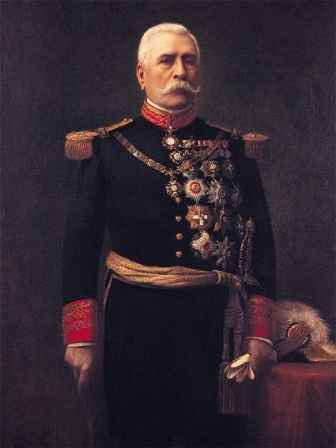

Personajes principales

Antonio López de Santa Anna
Militar y político mexicano relacionado con diversos acontecimientos del siglo XIX, incluyendo cambios territoriales del país.

Benito Juárez
Presidente mexicano que impulsó reformas políticas y económicas durante la construcción de la República.

Porfirio Díaz
Durante su gobierno se impulsó el crecimiento económico y la modernización del país, aunque también aumentaron desigualdades sociales.